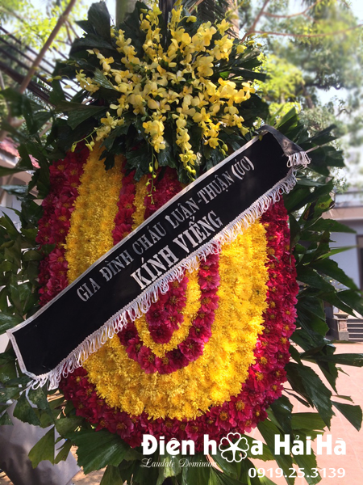

Vòng hoa đám tang lan trắng – Yên Bình
( 11 đánh giá )
2.000.000 VND
Vòng hoa đám tang lan trắng – Yên Bình còn có ý nghĩa gì?
Vòng hoa chính là lời chia buồn sâu sắc đến gia đình khi phải chịu nỗi đau mất mát này. Mỗi lời động viên, an ủi đối với họ chính là những liều thuốc an thần, giúp cho họ bớt đau buồn hơn. Suy nghĩ tích cực hơn trước sự ra đi của người thân. Sinh ly tử biệt là điều không ai muốn nhưng nó là lẽ thường tình. Ta phải biết cách chấp nhận nó. Không quá đau khổ, thê lương.
QUYỀN LỢI MUA HÀNG
1. Có thể giao hoa gấp trong 30 phút-2h.
2. Miễn phí thiệp, băng rôn chúc mừng.
3. Miễn phí vận chuyển hoa trong nội thành 63 TP.
4. Có hóa đơn đỏ trực tiếp.
5. Được kiểm tra hàng trước khi thanh toán.
6. Tư vấn có tâm và chính xác.